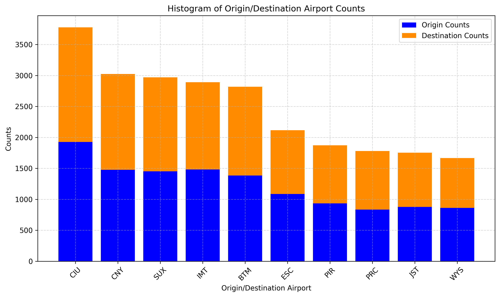
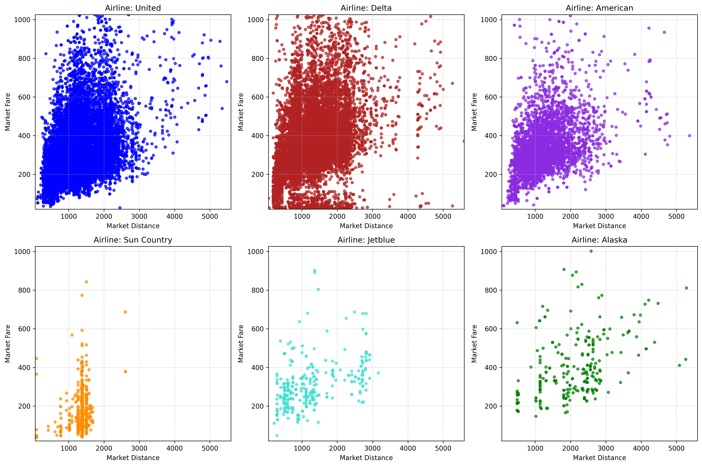

Project information
- Category: Graduate Coursework, University of Michigan (CEE 552: Travel Behavior Analysis & Forecasting)
- Collaborator: Karsten Van Fossan
- Data: DB1B Airline Origin & Destination Survey (10% ticket sample, 2023); U.S. DOT Essential Air Service reports
- Tools: Python, Biogeme (maximum likelihood estimation)
The Problem
The Essential Air Service program subsidizes flights connecting rural communities to major hubs, and costs are rising—over $550M a year and climbing. Yet how passengers at these small airports actually choose between their layover options is poorly understood, and the samples available for any single airport are small: a few hundred origin-destination pairs at most, not the large panels typical of urban travel-behavior research.
Approach
Using ticket data from the DB1B Survey, we built discrete choice models for three Essential Air Service airports with two competing layover options each — Sault Ste. Marie, MI (CIU), Moab, UT (CNY), and Sioux City, IA (SUX). After cleaning the data down to itineraries actually touching an EAS airport and isolating each origin-destination pair's real alternatives, we estimated logit models via maximum likelihood (Biogeme) to see how cost and distance drive which layover passengers choose.

Sample sizes across EAS airports — CIU, CNY, and SUX had the largest ticket samples, which is why they were selected as case studies.
Key Results
- Across all three airports, distance was a far stronger, more statistically significant predictor of layover choice than cost
- At CIU (148 O/D pairs) and CNY (106 O/D pairs), cost had no significant effect (p = 0.50 and p = 0.77)—travelers behaved as if price didn't factor in
- SUX (103 O/D pairs) was the exception: cost was significant (p = 0.01), likely because it's not a captive market—Omaha is a 90-minute drive away and offers a competing option
- Findings held despite each model resting on samples of roughly 100–150 observations per airport

Fare vs. distance by connecting carrier — the input relationship the choice models are built on.
Why It Matters
Every model here rests on 100–150 observations per airport. At that scale, a single mis-specified alternative or an unnoticed outlier can flip a coefficient's significance, so validating the choice set and checking robustness mattered as much as the estimation itself. The results themselves have real policy weight: distance consistently outweighed cost in shaping traveler choice, meaning EAS subsidy and routing decisions built around price sensitivity may be optimizing for the wrong variable. Getting that right—and trusting it—depends on taking the small-sample problem seriously in the first place.